先聊作者：为什么很多人会把李继刚当作中文 Prompt 圈代表人物之一
要看懂 ljg-skills，最好先看懂作者。
李继刚不是那种“靠一篇爆文突然冒出来”的 Prompt 博主，而是比较早一批把 Prompt 当成结构化写作对象来打磨的人。公开资料里，有几个点很能说明他的辨识度：
• GitHub 主页的个人简介很短，只有一句： Read → Think → Write → Publish。GitHub 主页• 他的个人网站在 2023 年 6 月 27 日 就发布过《如何写好Prompt: 结构化》，里面明确把 Prompt 往“像编程一样组织”的方向推进。 • 他的另一个公开仓库《lijigang/prompts》本身就叫“结构化的 Prompts”，长期被很多中文用户当成结构化 Prompt 的样板。 • 卡兹克在之前的文章中甚至直接用了《专访“Prompt之神”李继刚》这样的标题。
如果把这几条线连起来看，会发现李继刚真正有代表性的，不只是“会写 Prompt”，而是他一直在做同一件事：
把复杂的思考结构，压成少数几个能扛重量的模块，再让这些模块去驱动输出。
这点在 prompts 仓库里很明显，在 ljg-skills 里则更进一步。前者像结构化 Prompt 样板，后者更像 Prompt 长成了 workflow 资产。
下面这张图，就是这次按 ljg-card 的思路真实生成的作者卡片：
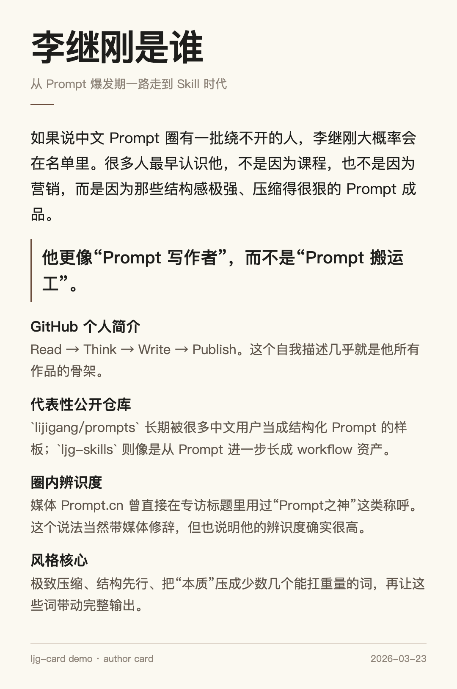
按这次查看 GitHub 页面时的可见信息，这个仓库是公开仓库，首页能看到大约 106 stars、23 commits，最近一次提交时间是 2026 年 3 月 23 日。也就是说，它不是一个过期样本，而是还在更新的活仓库。
一、仓库里到底有什么
直接说结论：
这个仓库 skills/ 目录里一共是 13 项能力，比 README 首页第一眼看上去还要更完整一点。真正有价值的，不是逐个核对目录名，而是看它们怎么分工。
按用途看，这 13 项能力大概可以归成四组：
1. 内容理解与表达原子
这组是仓库的核心。
• ljg-plain• ljg-word• ljg-learn• ljg-rank• ljg-writes• ljg-invest
它们有一个共同特点：不是在解决“有没有功能”，而是在解决“如何把一个东西想明白、说清楚、压缩成自己的语言”。
2. 阅读与研究链
• ljg-paper• ljg-paper-flow
这组明显面向“输入复杂材料，再转成可消化认知”的场景。
3. 传播与可视化链
• ljg-card• ljg-word-flow
这组是在回答一个很现实的问题：内容想明白了以后，怎么做成能传播、能交付、能发出去的东西。
4. 系统与外部世界连接层
• ljg-skill-map• ljg-x-download• ljg-travel
这组更偏外部触达、扫描、工作流编排。
换句话说，这套仓库不是随便摆了 13 个按钮，而是有一条很清晰的主线：
理解 -> 写出 -> 压缩 -> 传播。
这条主线，就是这个仓库的骨架。
二、逐个拆：这 13 个 skill/workflow 到底在干什么
下面不只是翻译功能说明，而是从“它解决什么问题、写法有什么特点、适合什么人、哪里最值得学”的角度，一个个看。
1. ljg-plain：这套仓库里最容易“立刻见水平”的 skill
如果只能先看一个 skill，最推荐从 ljg-plain 开始。
原因很简单：它最能代表这套仓库的精神。
ljg-plain 的目标不是“简化表达”这么空的话，而是非常明确地提出了一条标准：
把任何内容改写到聪明的 12 岁孩子也能懂。
这句话看起来很常见，但这个 skill 真正有意思的地方在于，它不是只说“请你更通俗一点”，而是连一整套负面清单都写了出来，比如：
• 不要学术腔 • 不要机械连词 • 不要一句塞三件事 • 不要一上来先铺背景 • 不要自以为很严谨地绕远路
这种写法很重要。
因为很多 skill 最大的问题，就是停留在“愿景句”。
比如会写：
• 让内容更清晰 • 让表达更自然 • 让读者更容易理解
这些都没错，但太空了。模型执行的时候，很容易只做到“看起来像在努力”，最后写出来还是一股 AI 腔。
而 ljg-plain 的好处在于，它把“不要什么”写得非常具体。
这就像教人打球。
“动作自然一点”是没法练的。
但“肩别耸、肘别飞、出手别拖”是能练的。
所以这个 skill 值得看的，不只是它能不能白话化，而是它展示了一种 skill 设计方法：
别只写目标，要写红线。
这次实测里，也专门拿它做了 demo，把整个 ljg-skills 仓库本身，用“12 岁孩子也能懂”的方式重讲了一遍。效果很直观：一旦按它的标准来，整段话会立刻从“产品介绍”变成“活人在说话”。
比如 demo 里有一句就很典型：
ljg-skills不是更多提示词，而是给 AI 装了几种固定工种。
以前 AI 只是一个会说话的人，现在它开始像一个小团队：有人负责解释，有人负责写，有人负责读论文，有人负责出图。
输入输出一眼看懂：
• 输入：一段难懂文字、一个 URL、一个文件路径，甚至一个概念或书名 • 输出：一篇“12 岁聪明孩子也能复述”的白话解释，仓库默认会写成 ~/Documents/notes/*.org• 最适合：先把复杂说明翻成人话，再谈理解和传播
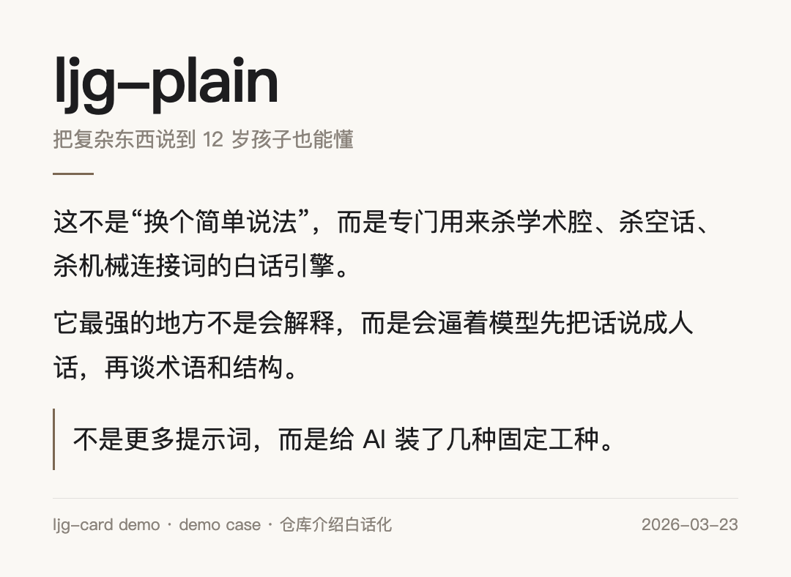
Demo 示例：
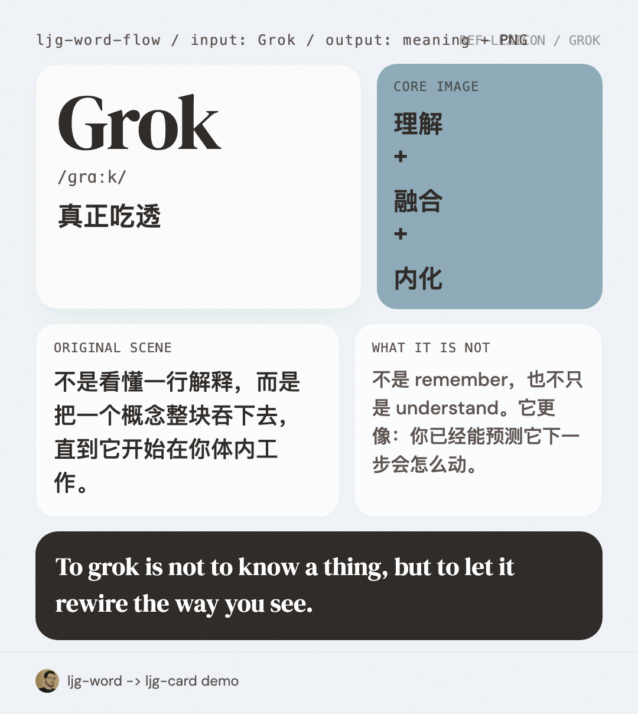
输入示例：
ljg-skills 是一个包含多个自定义 Claude Skills 的仓库，这些 Skills 覆盖内容重写、论文分析、旅行研究、视觉卡片生成等多个领域，可以帮助用户以更结构化的方式完成知识处理与内容生产。输出示例：
这个仓库可以理解成一排现成的脑回路。
你不用每次都跟 AI 重复说：先帮我读，再帮我改写，再帮我做成图。这里已经有人把这些动作提前写好了。你只要叫对 skill，它就按那套路子开工。2. ljg-word：不是查词典，而是拆“词的骨头”
ljg-word 乍一看会让人误会成“英语学习工具”。
但看完 SKILL.md 会发现，它做的根本不是传统背单词那套。
它关心的是三个层次：
• 这个词最原始的物理画面是什么 • 这个词的核心意象公式是什么 • 这个词为什么会长成今天这个意思
比如 demo 里试了 grok 这个词。
普通词典会告诉你：理解，彻底懂。
但 ljg-word 的风格不是停在翻译，而是继续往下压：
不是看懂，而是“这个东西已经在脑子里开始自己思考”。
这就把词从一个“标签”，变成了一个“动作”。
这也是这套仓库很有意思的一个共同点：
它不太喜欢停在定义层，更喜欢停在意象层。
定义是给考试用的。
意象才是会留在脑子里的。
所以，ljg-word 未必适合所有英语学习场景，但它特别适合两类人：
• 想把语言真正吃进去的人 • 想用词义拆解来训练表达感觉的人
如果说 ljg-plain 展示的是“怎么把复杂东西说简单”，那 ljg-word 展示的是“怎么把抽象词义说出画面感”。
这次我也按这个 skill 的思路做了一张 demo 卡，直接把 grok 这类词该怎么讲，压成了一张可传播的图：
输入输出一眼看懂：
• 输入：一个英文单词，比如 grok、serendipity、entropy• 输出：一份 Markdown 词义拆解，通常包含标题行、原始画面、核心意象和一句金句 • 最适合：把一个词从“翻译”讲到“意象、感觉和真实用法”
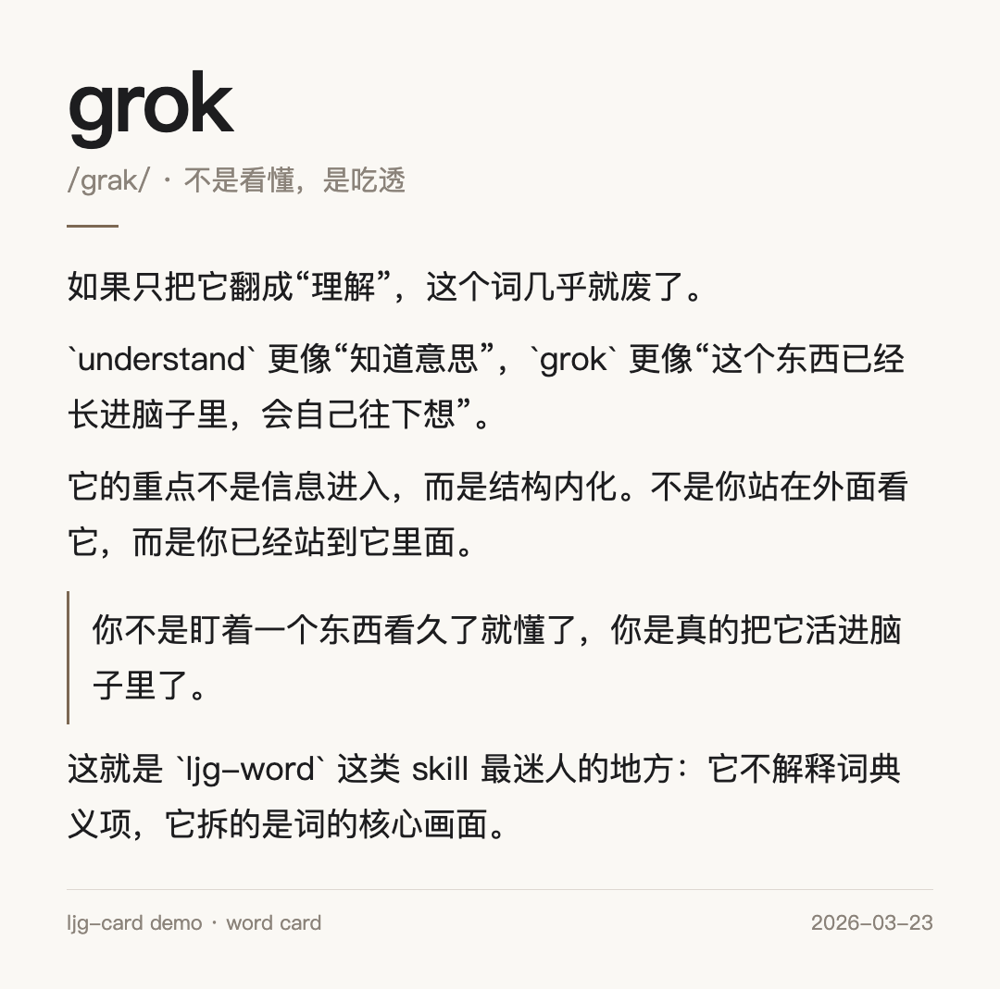
Demo 示例：
输入示例：
grok输出示例：
原始画面：不是站在外面看一个东西，而是钻进它里面，从骨架到脾气一起摸清。
核心意象：进入 + 共振 + 内化 = 真懂。
一句话：你不是盯着一个东西看久了就懂了，你是真的把它活进脑子里了。3. ljg-learn：八刀解剖概念，像给抽象词做切片
ljg-learn 的气质很强。
它不是常规意义上的“概念解释”，而是把一个概念从 8 个维度切开：
1. 历史 2. 辩证 3. 现象 4. 语言 5. 形式 6. 存在 7. 美感 8. 元反思
然后最后再压成一句顿悟。
这种设计，一看就不是在追求“效率最高的解释”，而是在追求“解释这件事本身也要有审美”。
这当然会带来两个结果。
一方面，它非常适合那些值得慢慢想的概念，比如：
• 熵 • Skill • 系统 • 记忆 • 结构
这类词，单靠百科式定义很难真正进脑子。
另一方面，它也天然不适合所有概念。
如果只是想快速知道一个 API 参数是什么意思，用 ljg-learn 就太重了。
所以，这个 skill 最适合“概念解剖”，不适合“术语速查”。
这次 demo 里，拿“Skill”本身做了一次八刀拆解。结果很有意思：一旦从“插件”那个隐喻切换到“手艺卡片”这个隐喻，很多关于 skill 的误解会立刻消失。
这就说明 ljg-learn 最值钱的地方，其实不是八刀本身，而是它强迫模型去换隐喻。
很多理解卡住，不是因为知识不够，而是因为隐喻不对。
输入输出一眼看懂：
• 输入：一个概念、术语或想搞懂的抽象词，比如 Skill、熵、系统• 输出：一份八维概念解剖报告，最后压成公式、一句话和 ASCII 结构图，仓库默认写成 ~/Documents/notes/*.org• 最适合：深挖一个概念的骨架和隐喻，不适合查某个 API 参数
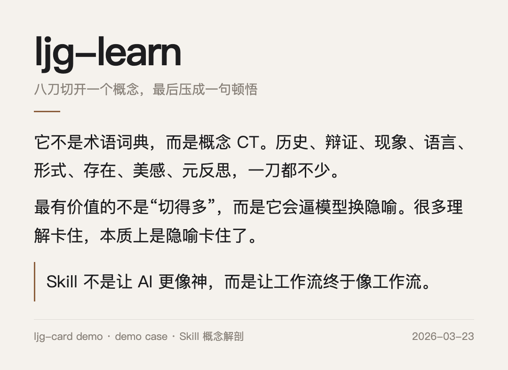
Demo 示例：
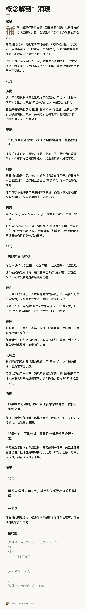
输入示例：
/ljg-learn Skill输出示例：
公式：Skill = 可复用的方法 + 可触发的上下文 + 可交付的标准
一句话：Skill 不是让 AI 更像神，而是让工作流终于像工作流。
结构图：
skill
+-- 触发条件
+-- 动作顺序
+-- 外部资源
+-- 交付标准4. ljg-rank：不是总结，而是降秩
ljg-rank 是这套仓库里最“有方法论野心”的一个。
它不满足于总结一堆关键点，而是要继续追问：
这个领域背后真正独立的生成器有几个？
注意，这跟常见的“3 个核心原则”“5 个关键要素”不是一回事。
总结型内容的问题在于，它常常只是把现象分门别类。
而 ljg-rank 要求的是：
• 能生成 • 最小化 • 相互独立 • 还要有预测力
这其实已经非常接近建模思维了。
不是在问“这个领域看起来像什么”，而是在问“这个领域到底由哪几根线牵着走”。
这类 skill 的风险也很明显：
写不好，就会非常装。
一旦只是换几个抽象词，最后既不生成，也不最小，也不预测，那就变成一种“高阶空话制造器”。
但从指令本身看，ljg-rank 至少在努力避开这个坑。它明确提出四个判据，这一点很加分。
这次 demo 里拿“AI skills 生态”做了降秩，最后压出三根生成器：
• 经验封装 • 环境接线 • 交付标准
这个结论不一定唯一，但很能说明这个 skill 的用法：
它不是帮人做总结，而是帮人“砍掉表面热闹，留下骨架”。
输入输出一眼看懂：
• 输入：一个领域、赛道、系统或现象堆，比如 AI skills 生态• 输出：一篇“降秩”报告，找出最少但真正独立的生成器，仓库默认写成 ~/Documents/notes/*.org• 最适合：从一堆热闹表象里找出背后的几根牵引线
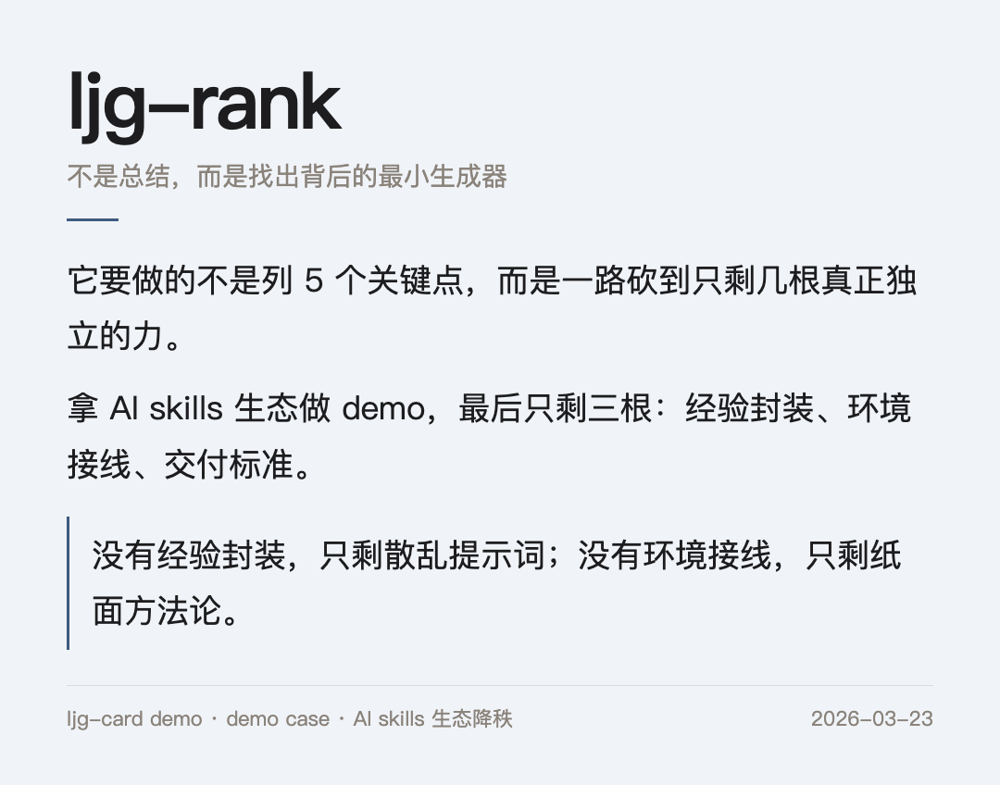
Demo 示例：
输入示例：
AI skills 生态输出示例：
这个领域真正独立的生成器只有三根：
1. 经验封装
2. 环境接线
3. 交付标准
没有经验封装，只剩散乱提示词；
没有环境接线，只剩纸面方法论；
没有交付标准，只剩看似努力的过程。5. ljg-writes：写作不是输出，是思考过程本身
ljg-writes 可能是整套仓库里“人格感”最强的一个 skill。
因为它不是教模型“如何像写作者那样输出”，而是直接规定了一种写作姿态：
一个人在想事情，碰巧被你看见。
这个定位非常狠。
它直接把大量常见 AI 写作习惯排除掉了：
• 不要演讲腔 • 不要教学腔 • 不要“接下来我们来讨论” • 不要一股脑列结构标签
而且，它还规定了一整套节奏感标准，比如：
• 句子要能说出口 • 同一种句式不能反复出现 • 听起来像可引用金句的，反而要重写
这套东西拿来做“普通写稿”未必人人都适合。
但它有一个特别大的价值：
它证明了一件事：skill 不一定非得围绕功能，也可以围绕声音。
很多人做 skill 时，天然只会写流程：
• 第一步干嘛 • 第二步干嘛 • 第三步干嘛
但 ljg-writes 在告诉人另一件事：
风格本身，也可以是工作流。
或者说，写作里的“气口”，也是可以封装的。
这次 demo 用它写了一个题目：为什么 Skill 不是提示词模板。
成品最大的特点，不是结构多完整，而是读起来真的有一种“不是在讲课，而是在当场想明白”的感觉。
这很难，也很有辨识度。
比如用 ljg-writes 的口吻去写“Skill 不是提示词模板”，出来的味道就不是功能说明，而是这种：
提示词模板是在帮一轮对话。skill 是在帮一个人整理自己的手艺。
前者更像写在手心里的提词器，后者更像一个已经排练过很多次的小剧组。
输入输出一眼看懂：
• 输入：一个观点、一个判断句、一个题目，或者一个自己还没完全想透的问题 • 输出：一篇带明显思考轨迹的 org-mode 成稿，仓库默认写到 ~/Documents/notes/*.org• 最适合：不是“凑字数”，而是在写的过程中把一个观点真正想透
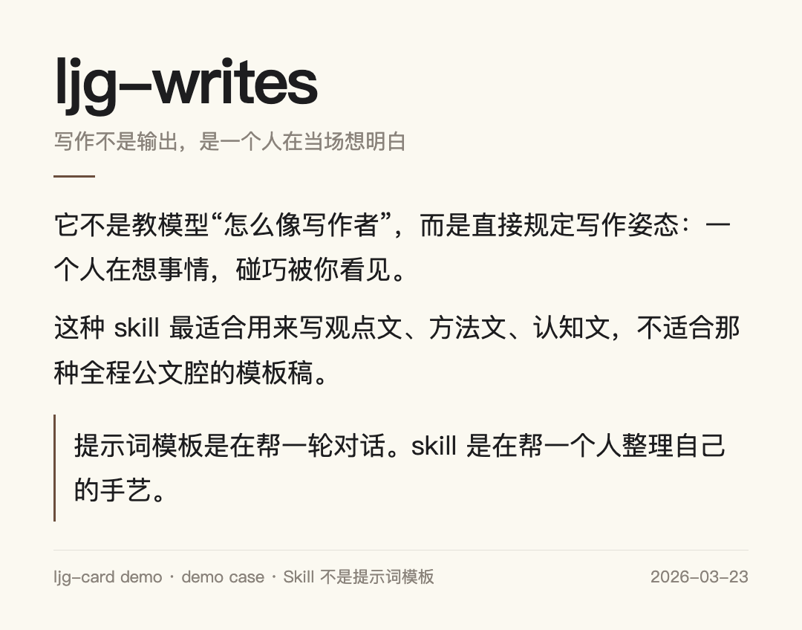
Demo 示例：
输入示例：
Skill 不是提示词模板输出示例：
提示词模板解决的是“这一轮怎么说”。skill 解决的是“这一类事情以后怎么做”。
前者更像临场发挥时写在手心里的提词器，后者更像一个已经排练过很多次的小剧组。6. ljg-invest：把项目看成“秩序创造机器”
ljg-invest 是这次最意外的一个 skill。
因为它没有出现在 README 的核心列表里，但仓库里确实有。
而且它不是传统投资分析框架。
它最核心的一句话是：
不问这个公司值多少钱，问这台机器转不转得起来。
这种写法，很明显已经不是标准商业分析口径，而是一套作者自己的判断语言。
这种 skill 有两面性。
优点是，非常有辨识度。
缺点也很明显：如果用户不是吃这一套语感的人，可能会觉得“好像挺厉害，但有点玄”。
不过，站在研究 skill 设计的角度，这个 skill 反而很值得看。
因为它说明了另一个问题：
skill 不一定非得中性。
很多人做 skill，总害怕“太主观”，于是把东西写得越来越平，最后虽然通用，但完全没有锋芒。
ljg-invest 走的是反方向。
它直接把自己的判断框架写成一个世界观，然后让模型沿着这套世界观出报告。
这次 demo 拿 ljg-skills 仓库本身做了一个“投资分析”式拆解。结论很有意思：它不是稳定的秩序创造机器，但它已经有明显的“方法论品牌资产”雏形。
即便不打算做投资分析，这个 skill 也值得看一遍。因为它能让人意识到：
真正高级的 skill，往往不是最中立的 skill，而是最有判断框架的 skill。
输入输出一眼看懂：
• 输入：公司名、项目介绍、BP、会议纪要、创始人访谈记录，或其他能说明项目的材料 • 输出：一份深度投资分析报告，核心不是估值表，而是“这是不是一台秩序创造机器” • 最适合：对项目做判断，而不是再堆一份平庸的商业分析模板
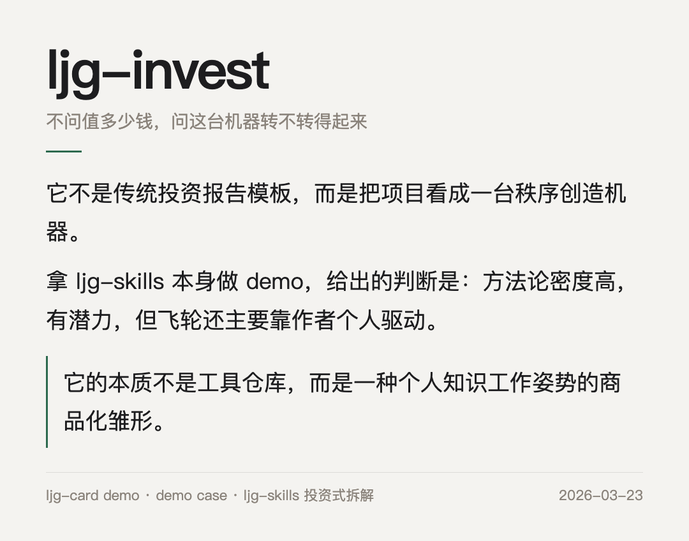
Demo 示例：
输入示例：
项目：ljg-skills输出示例：
判断：有潜力，但还不是稳定的秩序创造机器。
原因：方法论密度很高，作者辨识度强，但飞轮更多依赖个人，安装链路还不够顺。
最后一句：它的本质不是工具仓库，而是一种个人知识工作姿势的商品化雏形。7. ljg-paper：把论文从“术语森林”里救出来
如果说前面那几个 skill 更像内容原子，那 ljg-paper 就是这套仓库里非常成熟的一条主干。
它的定位说得很清楚：
不是做学术，不是做综述，不是为了批判而批判。
而是把论文里的思想，提取成普通人也能拿走的认知。
这个 skill 有几个很值得学习的点。
第一，它对语言质量的要求非常具体。
比如：
• 要像活人在说话 • 要有锚点 • 要有一步步想明白的推理过程 • 不要堆术语 • 不要学术腔填充
第二，它不是只要求“解释方法”，还强制要求：
• 找问题锚点 • 做费曼翻译 • 提炼洞见 • 做“博导式审稿” • 最后落到“对我有什么启发”
也就是说，它不是只在做摘要，而是在做一套“从外部论文吸收可迁移认知”的 pipeline。
这很高级。
因为很多人读论文，最大的痛苦不是看不懂公式，而是看完以后不知道自己到底拿走了什么。
ljg-paper 其实是在替人解决这个问题。
这次 demo 选的是 ReAct 论文。按照这个 skill 的口吻，一下就能把那篇经典论文的核心压到一句人话里：
别让模型只在脑子里打转，得让它出去摸一摸世界。
这就是 ljg-paper 的价值。
不是更学术，而是更可带走。
为了让这一点更直观，这次也把这段解读铸成了一张卡片：
输入输出一眼看懂：
• 输入：论文标题、arXiv 链接、论文 URL，或者 PDF 文件 • 输出：一份 org-mode 论文解读文档，核心是把论文翻成普通人能带走的认知，仓库默认写到 ~/Documents/notes/*.org• 最适合：想读论文，但更关心“我到底能从里面拿走什么”
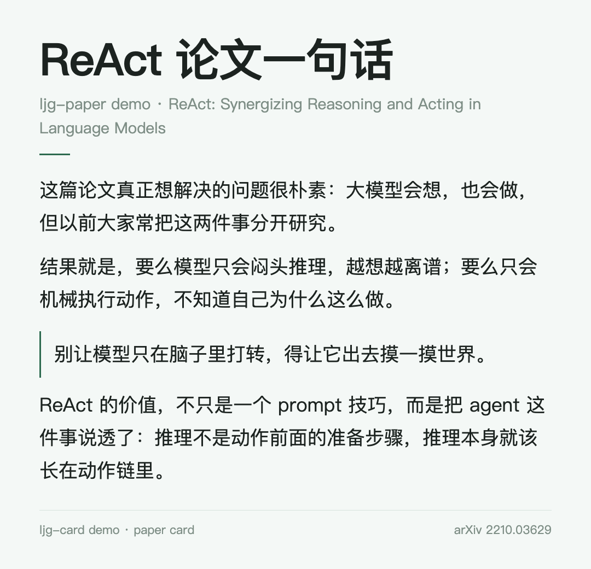
Demo 示例：
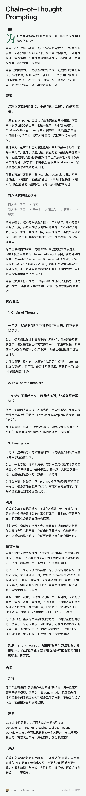
输入示例：
ReAct: Synergizing Reasoning and Acting in Language Models输出示例：
它真正想解决的问题很朴素：模型会想，也会做，但以前大家总把这两件事分开研究。
一句话总结：别让模型只在脑子里打转，得让它出去摸一摸世界。8. ljg-paper-flow：把“读完”直接接到“发出去”
这个 workflow 很有意思。
它不是单独一个新能力，而是把 ljg-paper 和 ljg-card 串起来：
先读论文，
再做卡片。
这件事的意义，不在于“省一步操作”。
而在于它说明了这套仓库的真正野心：
不是只帮人想明白，而是帮人把想明白这件事直接推到传播层。
这点很关键。
很多 skill 仓库做着做着，会停在“内容内部消费”。
比如：
• 解释完了 • 总结完了 • 存文件了
就结束了。
但 paper-flow 的思路是：既然已经花力气把论文消化掉了，为什么不顺手把它变成可传播资产？
这其实已经很接近内容生产者的真实流程了。
只不过，workflow 这种东西天生更依赖环境。
它不是单个 skill 好不好，而是链路里每个节点都得通。
paper-flow 也正因此更能暴露安装质量：只要 ljg-paper 或 ljg-card 任意一个环节不通，整个 workflow 就会断。
输入输出一眼看懂：
• 输入：一个或多个论文来源，可以是论文名、arXiv 链接、普通 URL 或 PDF • 输出：每篇论文两份东西，一份 ljg-paper解读 org 文档，加一张ljg-card生成的 PNG 卡片• 最适合：把“读完论文”直接接到“形成可传播资产”
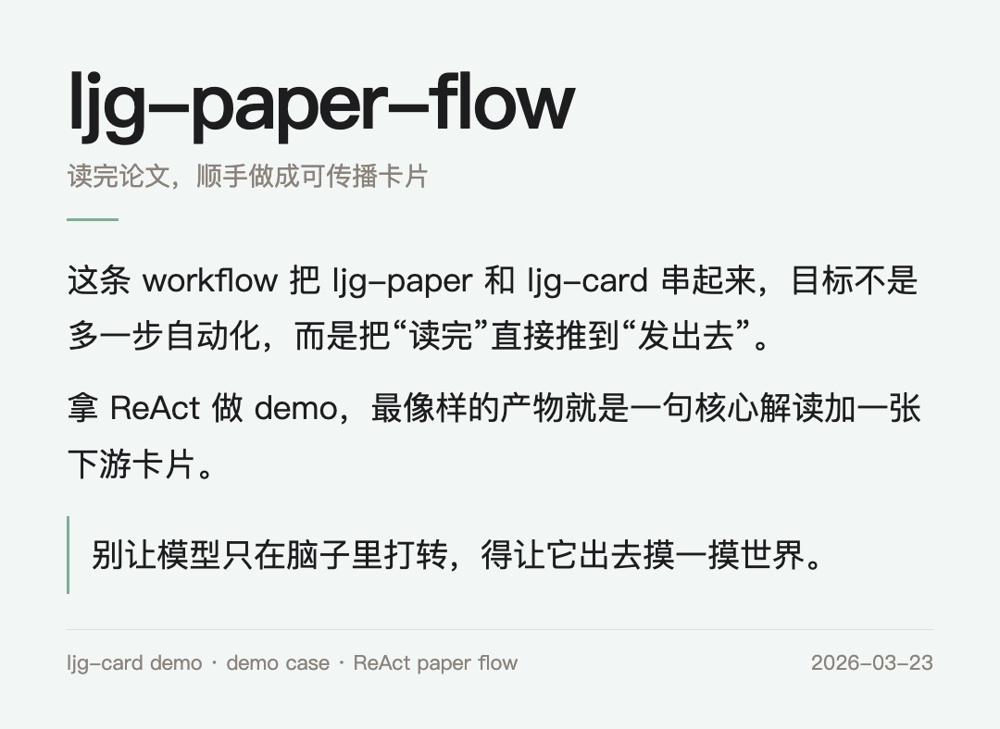
Demo 示例：
输入示例：
/ljg-paper-flow https://arxiv.org/abs/2210.03629输出示例：
📄 ReAct
📝 论文解读核心句：别让模型只在脑子里打转，得让它出去摸一摸世界。
🖼️ 下游卡片：https://blog-img-1258751817.cos.ap-singapore.myqcloud.com/wechat/ljg-skills/2026-03-23/2026-03-23-ljg-paper-card.png这条 workflow 的价值很直白：它把“读完论文”直接往“做成可转发资产”上推了一步。
9. ljg-card：这套仓库里最像“作品”的一个 skill
ljg-card 很可能是整个仓库里最容易被转发、也最容易被误解的 skill。
容易被转发，是因为它的交付结果最直观：PNG。
容易被误解，是因为很多人会把它理解成“卡片模板生成器”。
但真正去读它的 SKILL.md 和 references/，会发现作者其实很在意另一件事：
不要有 AI 生成痕迹。
这个 skill 在视觉品味上写得非常细：
• 禁 Inter • 禁纯黑 • 禁三等分卡片 • 禁居中 Hero • 禁 AI 文案腔 • 禁假数据
说实话，这种东西不一定人人都认同。
但它至少说明一件事：作者是把视觉输出当作品，不是当截图。
这就比大量“只要能渲染出来就算成功”的 skill 高一个层级。
这次实测里，ljg-card 其实是最关键的一关。
因为本机核查时发现：
• ljg-card确实装进了~/.claude/skills/• 模板也在 • playwright依赖目录也在• 但默认 shell 里 node不在PATH
这意味着，如果完全按文档里的默认命令去敲，大概率会失败。
但继续追下去会发现，node 其实不是没装，而是藏在 /opt/homebrew/bin/node。
一旦改成绝对路径，capture.js 就真的能跑通。
这次不只是“证明能跑”，而是真的按 ljg-card 逻辑生成了多张图，其中这张“实测结论卡”就是最直接的例子：
输入输出一眼看懂：
• 输入：一段文字、一个 URL、一个文件路径，或者上游 skill 产出的 org 内容 • 输出：PNG 视觉成品，可选长图、信息图、多卡、视觉笔记或漫画，默认落到 ~/Downloads/• 最适合：把文字直接铸成可转发、可展示、可复用的视觉交付物
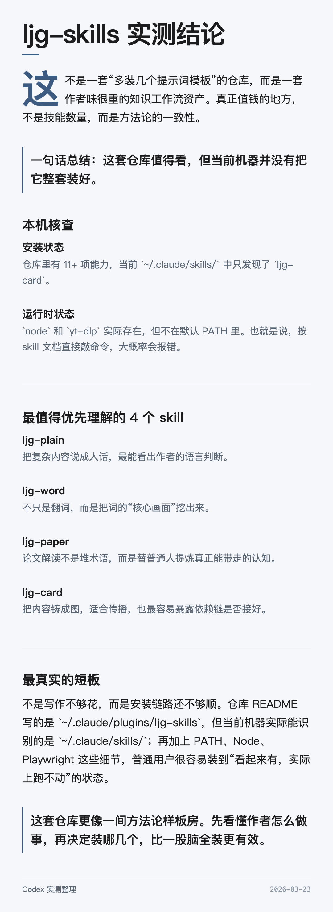
这个结果非常有代表性：
ljg-card 不是坏的，而是默认环境假设太乐观。
这也是很多 skill 仓库常见的问题。作者机器上能跑，不等于别人机器上直接照着就能跑。
Demo 示例：
输入示例：
这不是一套“大而全”的技能市场仓库，而是一套作者风格非常强的知识工作流资产。
本机只发现 ljg-card 已安装，但修正 node 路径后可成功出图。输出示例：
HTML: 2026-03-23-ljg-skills-long-card-demo.html
PNG: https://blog-img-1258751817.cos.ap-singapore.myqcloud.com/wechat/ljg-skills/2026-03-23/2026-03-23-ljg-skills-long-card-demo.png10. ljg-word-flow：一个很合理的内容链式 workflow
这个 workflow 的想法非常顺：
先用 ljg-word 把一个词拆透，
再用 ljg-card -i 把它铸成信息图。
这就把原本很个人化、很内在的“词义理解”，转成了一种可以对外展示的内容形态。
它适合什么人？
特别适合那些本来就在做：
• 英语表达积累 • 词源内容 • 小红书/公众号知识卡片 • 语言感觉训练
的人。
但和 paper-flow 一样，它对运行链依赖更高。
它的价值在于 workflow 设计本身很顺，而不是当前机器上天然就能一键跑通。
输入输出一眼看懂：
• 输入：一个或多个英文单词 • 输出：每个词先得到一份 ljg-word解析，再得到一张ljg-card -i生成的信息图 PNG• 最适合：把语言理解直接推到内容传播层
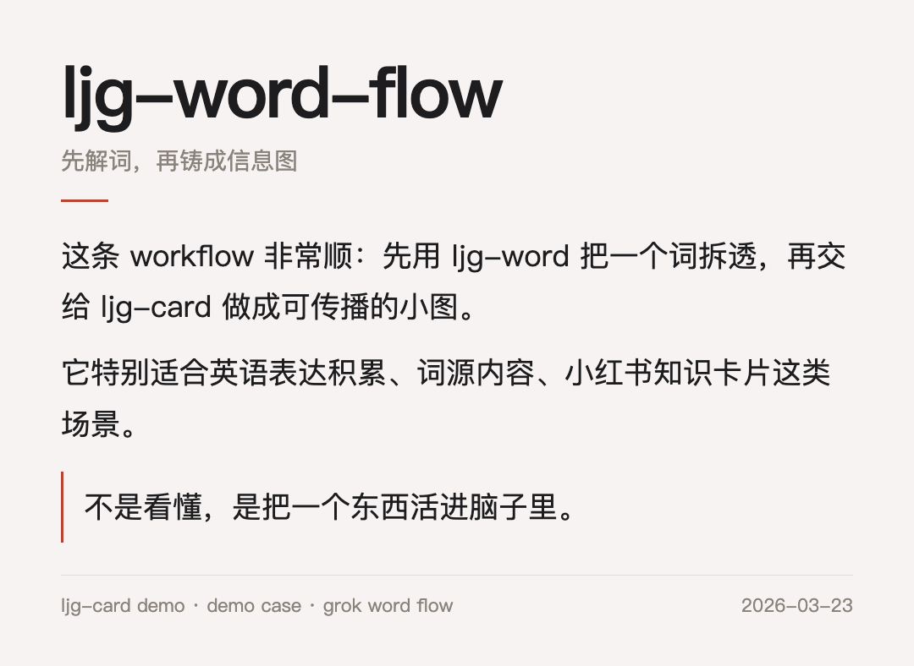
Demo 示例：
输入示例：
/ljg-word-flow grok输出示例：
📖 grok
📝 拆解结果：不是看懂，是把一个东西活进脑子里
🖼️ 下游卡片：https://blog-img-1258751817.cos.ap-singapore.myqcloud.com/wechat/ljg-skills/2026-03-23/2026-03-23-ljg-word-card.png它最适合拿来做“语言理解 -> 视觉传播”这一跳。
11. ljg-skill-map：一个很实用的“现实检验器”
ljg-skill-map 表面看像一个辅助小工具，实际上很有代表性。
因为它解决的是 skill 生态里一个特别实际的问题：
到底装了什么？
很多人现在本地 skills 越装越多，几十个、上百个，最后最难回答的不是“有没有”，而是：
• 哪些是原生可调用的 • 哪些只是目录还在 • 哪些是旧版本 • 哪些同名但路径冲突
ljg-skill-map 做的，就是把这件事一眼画出来。
这次实测里，它也直接帮忙把最重要的结论照出来了：
当前主机上，仓库里同名可见的 ljg-* skill，实际上只有 ljg-card 一个。
别小看这个结论。
这意味着，如果只是凭感觉说“本机已经安装过了”，那十有八九会误判。
所以这个 skill 很适合作为装库之后的第一步自检工具。
输入输出一眼看懂：
• 输入：本机已安装的 skills 目录，本质上不需要用户再喂内容 • 输出：一张直接显示在对话里的 ASCII 技能地图，不写文件 • 最适合：装完 skill 之后先做一轮现实核查，看看“到底装了什么”
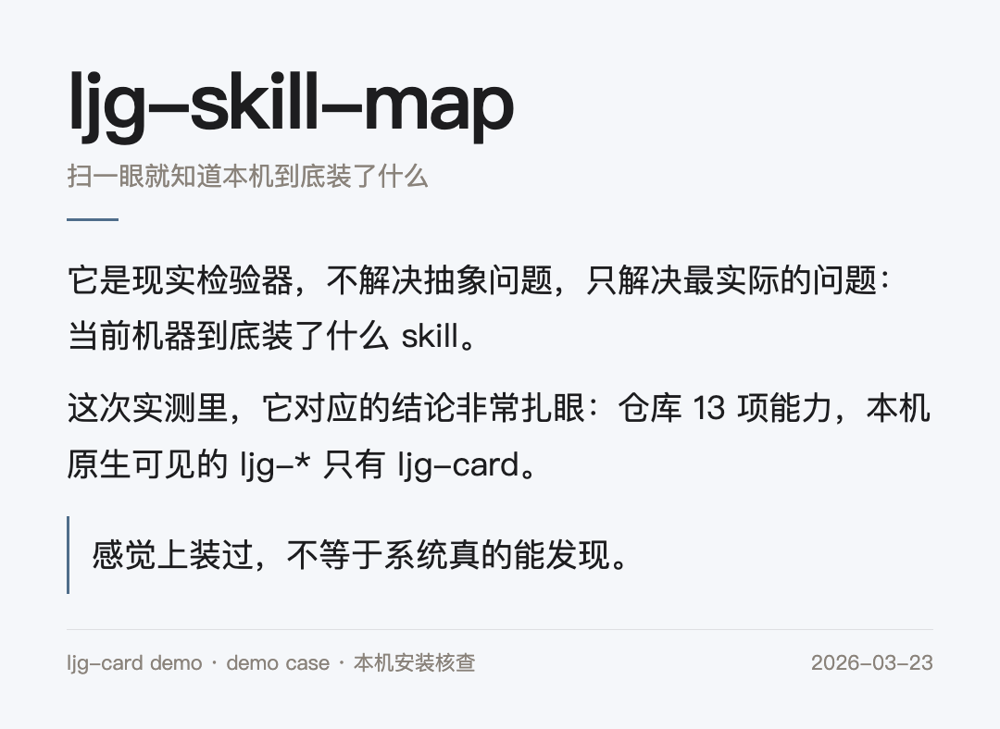
Demo 示例：
输入示例：
/ljg-skill-map输出示例：
仓库 13 项能力中，当前主机原生可见的 ljg-* 只有 ljg-card。12. ljg-x-download：很实用，但也最容易受环境制约
ljg-x-download 做的事很直接：从 X/Twitter 链接下载图片或视频到 ~/Downloads。
它依赖 yt-dlp。
这类 skill 的特点是，一旦环境齐，就非常实用；一旦环境没齐，就会特别像“明明写了但为什么就是不工作”。
这次检查里也出现了类似情况：
• yt-dlp在默认 PATH 里找不到• 但绝对路径 /opt/homebrew/bin/yt-dlp实际存在
这再次说明，这个仓库在“方法论层”很强，但在“跨机器环境稳健性”上还可以继续补。
如果后续真的要把这套仓库推荐给更多普通用户，x-download 这种依赖外部命令的 skill，最好都得补一层更稳的安装检测和 fallback。
输入输出一眼看懂：
• 输入：一个 X/Twitter 帖子链接 • 输出：下载到 ~/Downloads/的图片或视频文件，并回报文件名、大小和路径• 最适合：把推文里的媒体素材直接保存到本地
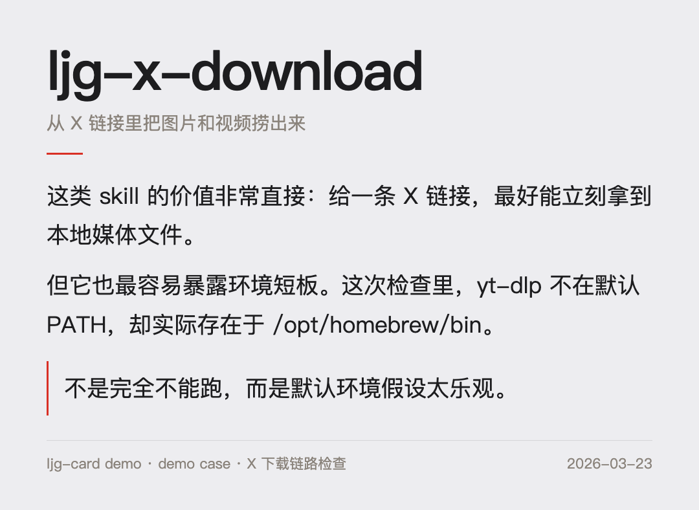
Demo 示例：
输入示例：
https://x.com/.../status/...输出示例：
若推文里有媒体，目标结果应该是把图片或视频下载到 ~/Downloads/，
并在对话里回报文件名、大小和保存路径。环境核查示例：
默认 PATH 下找不到 yt-dlp
绝对路径 /opt/homebrew/bin/yt-dlp 存在也就是说，这个 skill 不是完全没条件运行，而是和 ljg-card 一样，默认环境假设偏乐观。
13. ljg-travel：最有野心，也最重的一条 workflow
ljg-travel 是很有想法的一条 workflow。
它不是普通旅游攻略，而是把“出发前做案头研究”这件事，做成了一条完整工作流：
• 先做城市研究 • 再做内容提炼 • 最后生成 org 文档和卡片
而且它特别强调：
• 历史分层 • 博物馆重点 • 古建遗存 • 考古发现 • 人文脉络 • 深度内容推荐
说实话，这条 workflow 如果真能稳定跑通，价值很大。
因为它解决的不是“去哪儿玩”，而是“去之前怎么把这座城市真正读进脑子里”。
但它的重量也摆在那儿：
它依赖的不是单点 skill，而是一整套外部研究链。
所以从实操角度看，它更像一个“样板间级 workflow”。
非常有启发，但也最不适合一上来就拿它验证安装环境。
输入输出一眼看懂：
• 输入：一个城市名，可选聚焦主题，比如 西安 -f 唐代• 输出：一份 org-mode 旅行研究文档，再加两张 PNG 卡片，一张讲文明骨架，一张讲参观路线 • 最适合：出发前做深度文化功课，而不是临时拼一个打卡攻略
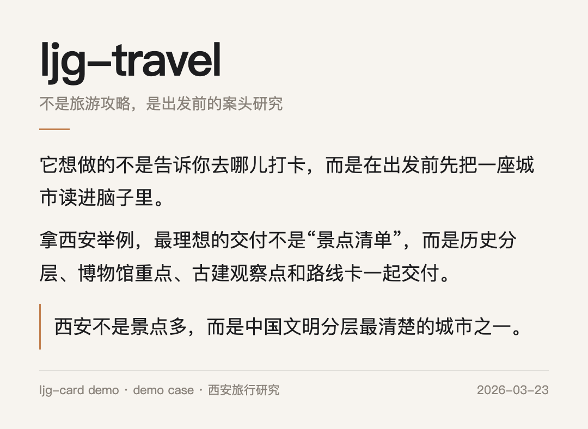
Demo 示例：
输入示例：
/ljg-travel 西安输出示例：
* 城市概览
西安不是“景点多”，而是中国文明分层最清楚的城市之一。
* 博物馆指南
陕西历史博物馆：看唐代系统
秦始皇帝陵博物院：看帝国如何把秩序做成规模
* 古建遗存
大雁塔：看佛教传播后的本地化结构
* 参观路线
第一天：陕历博 -> 大雁塔
第二天：兵马俑 -> 秦始皇陵如果后面真把整套依赖补齐，这会是仓库里最有机会出“爆款知识服务感”的 workflow 之一。
三、这套仓库真正强的，不是 13 个名字，而是 3 条主线
把这些 skill 全部看完之后，会发现一个特别清楚的事实：
这个仓库不是“13 个孤岛功能”。
它其实是三条主线互相咬合。
第一条主线：把复杂东西说成人话
这条线包括：
• ljg-plain• ljg-word• ljg-learn• ljg-rank• ljg-paper
共同目标是：把理解这件事，从“知道定义”推进到“脑子里有画面、有结构、有自己的话”。
第二条主线：把思考过程沉淀成写作与判断
这条线包括：
• ljg-writes• ljg-invest
共同目标是：让输出不是信息拼盘，而是带着清楚判断和声音。
第三条主线：把理解直接推向交付与传播
这条线包括：
• ljg-card• ljg-paper-flow• ljg-word-flow
共同目标是：别把认知停在脑内，顺手做成交付物。
这三条线合在一起，就构成了这个仓库最有价值的地方：
它不是在帮 AI 多做几件事，而是在帮一个人把“理解 -> 判断 -> 表达 -> 传播”整条链路固定下来。
这也是为什么它会让人觉得“有作者感”。
因为它本质上就是某种个人方法论的外化。
但如果从真正“怎么用”的角度看，更适合按输入输出关系来理解它（本文最重要的一张图！！！）：
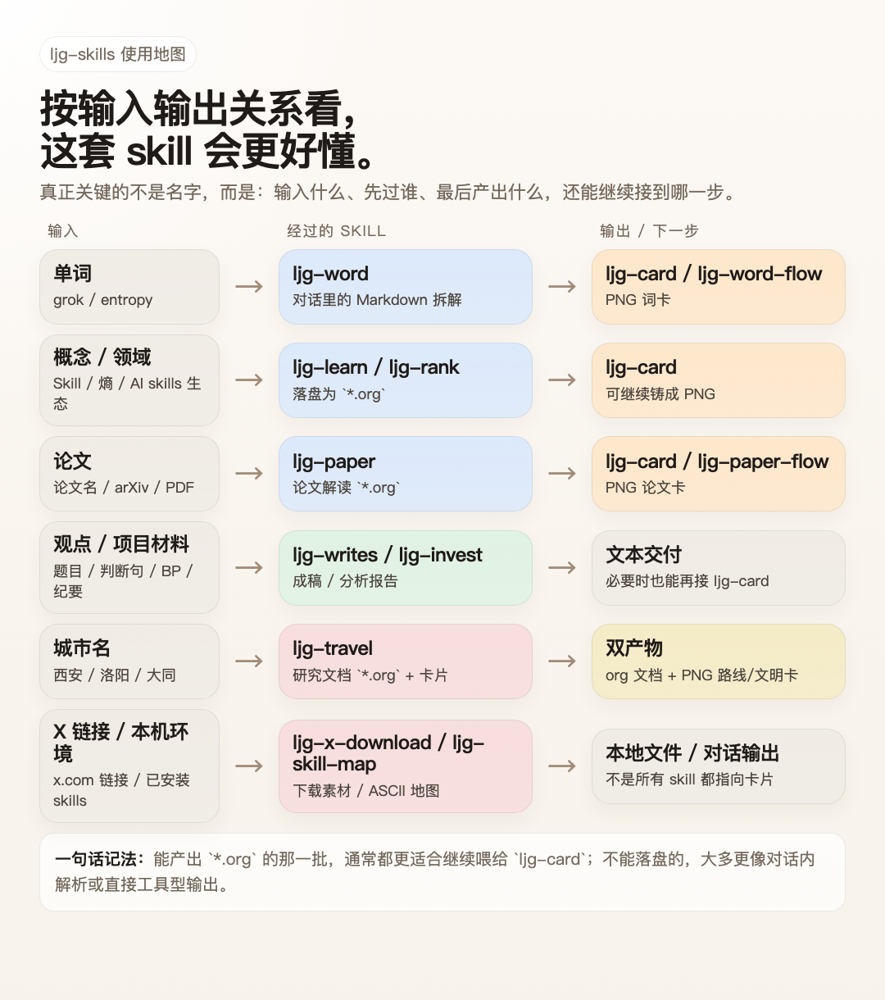
这张图想说的其实就一句话：
先看输入是什么，再看先过哪个 skill、会产出什么、下一步还能接谁。
四、上手前只需要知道的一件事
如果读了以上的内容，你判断需要这套skills，只需要将“https://github.com/lijigang/ljg-skills/tree/master“ 这个Github的repository喂给OpenClaw，然后让它进行安装即可，请在安装结束之后，让它对每个skill都进行测试并生成相应的交付物以确保skill真的跑通了。
这里不再赘述。
五、这套仓库适合谁，又该怎么上手
讲到这里，其实已经能给出一个比较清楚的判断了。
这套仓库最适合三类人：
• 内容创作者：尤其是那种想把“读材料 -> 消化 -> 改写 -> 做卡片 -> 发出去”串成一条线的人 • 知识工作者：长期做论文消化、概念拆解、方法论整理、私人知识库写作的人 • 想研究 skill 设计的人：哪怕最后一个都不装，光把它当成 skill 写法样板来看，也很值
不太适合的人也很明确：
• 只追求功能数量、不在乎作者风格的人 • 希望每个 skill 都保持企业腔、强中立、模板化输出的人
如果现在就想开始上手，更推荐的顺序也很简单：
先看懂这三个：
• ljg-plain• ljg-paper• ljg-card
因为它们刚好对应“讲明白”“读进去”“做出来”。
再往后，按这条线去理解就很顺：
1. ljg-plain2. ljg-word3. ljg-paper4. ljg-card5. ljg-word-flow6. ljg-paper-flow7. ljg-travel
这个顺序的关键，不是先装哪个，而是先看懂每个原子动作到底在干什么，再看 workflow 为什么顺。
最后的推荐结论也可以压成一句话：
这不是一套适合盲装的 skill 仓库，但它非常值得认真拆。
它最值钱的地方，不是“功能多”，而是很真实地展示了：
• 一个人怎么把自己的脑回路写成可复用的 workflow 资产 • skill 不只是自动化命令，也可以是风格、判断和方法论的外化
所以更好的打开方式，不是问“有没有一键神技”，而是去看：
一个人到底怎么把自己的方法，拆成可以反复调用的 skill。